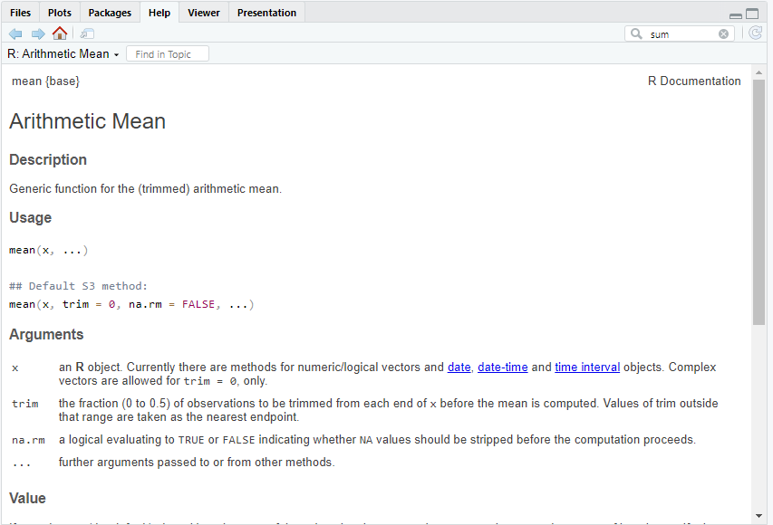

1 + 2[1] 3R is an interpreted language, which means that you can write commands to an interpreter in a console that will execute them and return the results. This is in comparison with compiled languages that require to compile the source code to translate it to a machine understandable code.
In the RStudio console, you can see the symbol below. This is the command prompt, indicating that the system us ready to execute an instruction or command.
>R syntax is relatively simple and, although daunting if you have never programmed before when you first encounter it, you will quickly get acquainted with it.
Here’s a simple example of how R code looks. In the following sections we explain some basic concepts on the syntax and notation.
# Load a package
library(tidyverse)
#Assign values to variables
x <- c(1, 2, 3, 4, 5)
y <- c(2, 4, 6, 8, 10)
# Create a scatter plot
plot(x, y, main="Simple Scatter Plot", xlab="X Axis", ylab="Y Axis")
# Fit a linear model
model <- lm(y ~ x)
abline(model, col="blue")Before going forward, note that lines of code starting with the symbol # are not interpreted. This is use to introduce comments in your code for readability and documentation. We will come to that later when we talk about scripts and notebooks.
Note: This course is not intended to be an in-depth R programming course. We will use the language to illustrate the concepts in the lectures and provide with simple examples so that you can perform basic data analysis.
There are plenty of online guided resources for further self-study of R and its capabilities. If you would like to go beyond the basics in the course or familiarize with the language, I would suggest two starting pages:
UMC Utrecht’s R tutorial: http://r-tutorial.nl/
Book “R for Data Science”, available online at: https://r4ds.hadley.nz/
Every instruction to enter in the command prompt is called a command.
A simple command is to perform an arithmetic operations like for example:
1 + 2[1] 3Copy the code as you read along in this workbook and try it yourself in RStudio to become familiar with using the tool and environment.
The command just calculated the addition of the two numbers. In this example, we used the operator + to do so.
We include a list below of the basic operators in R, grouped by category. Do not worry if not all are understandable yet:
1. Arithmetic Operators
Used for basic mathematical operations:
| Operator | Description | Example |
|---|---|---|
+ |
Addition | 2 + 3 |
- |
Subtraction | 5 - 2 |
* |
Multiplication | 4 * 3 |
/ |
Division | 10 / 2 |
^ or ** |
Exponentiation | 2^3 or 2**3 |
%% |
Modulus (remainder) | 10 %% 3 |
2. Relational (Comparison) Operators
Used to compare values:
| Operator | Description | Example |
|---|---|---|
== |
Equal to | x == y |
!= |
Not equal to | x != y |
> |
Greater than | x > y |
< |
Less than | x < y |
>= |
Greater than or equal to | x >= y |
<= |
Less than or equal to | x <= y |
3. Logical Operators
Used for logical operations (return TRUE/FALSE):
| Operator | Description | Example |
|---|---|---|
& |
Element-wise AND | x > 1 & x < 5 |
| |
Element-wise OR | x < 1 | x > 5 |
! |
NOT | !TRUE |
4. Assignment Operators
Used to assign values to variables:
| Operator | Description | Example | Comment |
|---|---|---|---|
<- |
Preferred assignment | x <- 5 |
Most commonly used |
= |
Alternative assignment | x = 5 |
Used in the assignment of values to function arguments (see function section below) |
-> |
Assign right to left | 5 -> x |
Although syntactically valid in R, not used often |
5. Miscellaneous Operators
| Operator | Description | Example |
|---|---|---|
%in% |
Membership test | 3 %in% c(1, 2, 3) will return TRUE |
: |
Sequence | 1:5 returns 1 2 3 4 5 |
A variable is a name that stores a value or data object. You can think of it as a labeled container that holds information you want to use or manipulate in your program.
In R, you assign values to variables mostly using the operator <- .
x <- 5 # Assign 5 to variable x
y <- 10 # Assign 10 to variable y
z <- x + y # Add x and y
print(z) # Print the result [1] 15Variables naming in R can be anything, but follow a few rules:
Must start with a letter
Can contain letters, numbers, underscores (_) or periods (.)
Are case-sensitive (Name and name are different)
R supports several basic data types. Some of the most common are:
Numeric: x <- 3.14
Integer: x <- 5L (note the L)
Character: name <- "Leticia"
Logical: flag <- TRUE
Vectors are the most basic data structure in R. They are a groups of values built using the combine function, c(). For example, c(1, 2, 3, 4) creates a four element series of positive integer values
numbers <- c(1, 2, 3, 4)
numbers[1] 1 2 3 4You can also perform operations on vectors.
numbers^2[1] 1 4 9 16structures can be thought of as sets of data organized in a table format in rows and columns. They can be created using the dataframe() function.
df <- data.frame(
SubjectID = c("S1", "S2","S3"),
age = c(25, 30, 28)
)
df SubjectID age
1 S1 25
2 S2 30
3 S3 28You can access the individual columns on a dataframe using the $ operator. Try to start typing the code below on the console. You will see that R provides suggested completions, displaying the available columns in the dataframe.
df$SubjectID[1] "S1" "S2" "S3"Many of the functions we will use in this course require a dataframe as an input or produce one as output, so it is the data structure you will use the most.
Functions perform tasks in R. They take in inputs called arguments and return outputs. They are called using parentheses. For example, the function mean() in R calculates the mean of the elements we provide as input.
# We can specify a list of numbers
mean(c(1,2,3,4))[1] 2.5Or, more useful, we can provide a variable containing values:
# we defined the variable numbers before
mean(numbers)[1] 2.5The parameters of a function and normally called arguments. You can either manually specify a function’s arguments or use the function’s default values. In the examples above mean() and sum() are simple functions with not many arguments, but this is not normally the case.
To know the arguments of a function you can use the R help. There are two ways to access the help pages for a function:
Use the operator ? followed by the function name in the console, or use the help() function.
For example, type the instruction ?mean in the console. The help page for the mean() function will open in the RStudio Help panel as in the image below:

You can of course directly open the Help tab and search for the function of interest.
As you can see above, mean() actually has two other arguments, trim and na.rm . The arguments have a default value, so if we don’t explicitly include them in the function call, they will use that value. Let’s look at an example using na.rm :
R has a special value called NA , which means “Not Available” and it is used to represent missing values on the data. In experimental work is often the case that some data point is lost or corrupted and we have incomplete datasets. Let’s assume you had performed an online experiment that computed the reaction time in miliseconds of 10 participants, and one value was not available as per the vector below:
rt <- c(234.2, 127.5, 256.2, NA, 287.1, 145.6, 358.9, 200.1, 398.3, 178.3)Let’s try to calculate the average reaction time of your data using mean():
mean(rt)[1] NAThe function tries to calculate the average, but when one value is not available (NA) the result is also NA . In the help in the image below we see there is an argument na.rm that we can use to ignore the missing elements in the data:
mean(rt, na.rm = TRUE)[1] 242.9111Now the function worked and summed all the numbers and divided them by 9, ignoring the missing data, in the calculation of the average.
We’ll work with functions a lot throughout this book and you’ll get lots of practice in understanding their behaviors, so don’t panic.
Finally an advanced note to make you aware that you can define your own functions. The following code defines a new function called add() that, well, adds two numbers:
add <- function(a, b) {
return(a + b)
}Once you have defined the function, you can use it as any other in R:
add(3.5, 2.5)[1] 6In R, a factor is a data structure used to represent categorical data. Categorical data consists of variables that have a fixed number of unique values, known as levels. These are typically used for any variable that classifies observations into groups. We will use factors extensively in the analysis of data
We convert a vector into a factor by using the factor() function. Let’s look at one example.
We want to create a dataset of six words, collecting data of the animacy, gender, length and frequency of the word.
First, we create individual variables with vectors including the values
NounAnimacy<-c("animate","inanimate","inanimate","animate","animate","animate")
NounAnimacy [1] "animate" "inanimate" "inanimate" "animate" "animate" "animate" NounGender<-c("feminine","masculine","neuter","masculine","feminine","feminine")
NounGender[1] "feminine" "masculine" "neuter" "masculine" "feminine" "feminine" NounLength<-c(6,7,4,5,8,6)
NounLength [1] 6 7 4 5 8 6NounFrequency<-c(638,799,390,569,567,665)
NounFrequency[1] 638 799 390 569 567 665As you can see from the output above, data in the variables NounAnimacy and NounGender are considered as words, or literal strings. The next step is to indicate they are factors.
NounAnimacy<- factor(NounAnimacy)
NounAnimacy [1] animate inanimate inanimate animate animate animate
Levels: animate inanimateNounGender<- factor(NounGender)
NounGender[1] feminine masculine neuter masculine feminine feminine
Levels: feminine masculine neuterAs you can see by the output produced, now the variables are considered as factors, and Levels indicate the unique values that the each takes.
With the variables above, we can now create a dataframe.
Dataexample<-data.frame(NounAnimacy,NounGender,NounLength,NounFrequency)
Dataexample NounAnimacy NounGender NounLength NounFrequency
1 animate feminine 6 638
2 inanimate masculine 7 799
3 inanimate neuter 4 390
4 animate masculine 5 569
5 animate feminine 8 567
6 animate feminine 6 665A few useful functions when working with dataframes:
nrow() : returns the number of rows of a dataframe. Normally corresponding to observations in experimental data files.
ncol(): returns the number of columns of a dataframe.
head() : displays the first rows of a dataframe or vector. By default, it displays the first 6 items, but you can specify how many rows to show with the argument n . Useful when displaying on the screen large datasets.
View(): Opens the dataset in a excel-like data viewer in RStudio. Same can be done clicking the name of the variable in the Environment window in RStudio.
str() : can be used to display the structure of the dataframe.
colnames(): returns the names of the columns/variables in a dataframe.
Let’s look at a few examples with the dataframe we just created.
First we can inspect what is the dataframe structure:
str(Dataexample)'data.frame': 6 obs. of 4 variables:
$ NounAnimacy : Factor w/ 2 levels "animate","inanimate": 1 2 2 1 1 1
$ NounGender : Factor w/ 3 levels "feminine","masculine",..: 1 2 3 2 1 1
$ NounLength : num 6 7 4 5 8 6
$ NounFrequency: num 638 799 390 569 567 665As you can see, the output tells us that the dataframe is composed of four variables (columns), two with categorical values and two with numerical elements and provides the names of those columns. It tells us also that it contains 6 observations (rows). You can obtain also the information above using:
nrow(Dataexample)[1] 6ncol(Dataexample)[1] 4colnames(Dataexample)[1] "NounAnimacy" "NounGender" "NounLength" "NounFrequency"If we want to display the first 4 observations in the dataset, you could use:
head(Dataexample, n = 4) NounAnimacy NounGender NounLength NounFrequency
1 animate feminine 6 638
2 inanimate masculine 7 799
3 inanimate neuter 4 390
4 animate masculine 5 569Basics on R programming:
Chapter 1, Introduction to R, from Bodo Winter’s book ((Winter 2019)).
Sections 2 to 8 on R basic Tutorial by UMC Utrecht
A good starters reference for R is the book “R for Data Science” ((Wickham, Çetinkaya-Rundel, and Grolemund 2024)) ). The book is available online freely at R for Data Science
Excellent eBook to learn R Basics ((Grolemund 2014)) Hands On Programming with R
Dataframes:
YouTube Videos by DataCamp: